長期トレンド
JKMとJEPXシステムプライスの推移グラフ
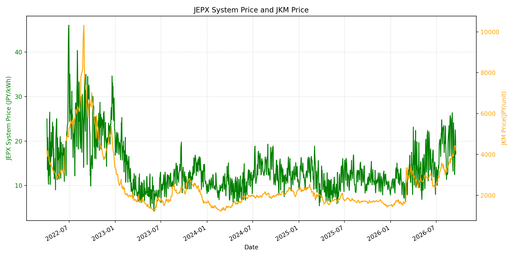
WTIの推移グラフ
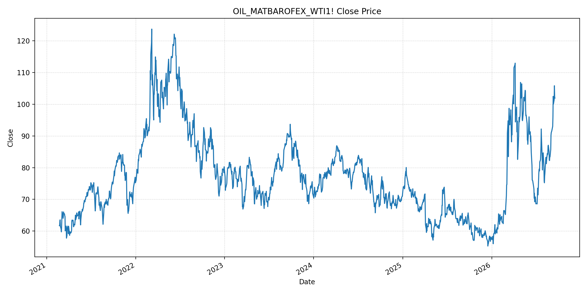
JEPXエリアプライスグラフ（直近一年分）
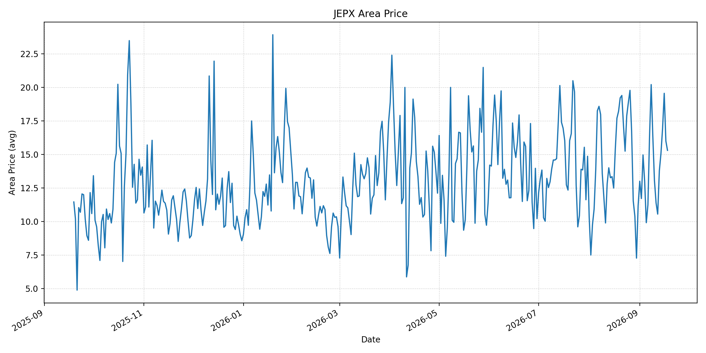
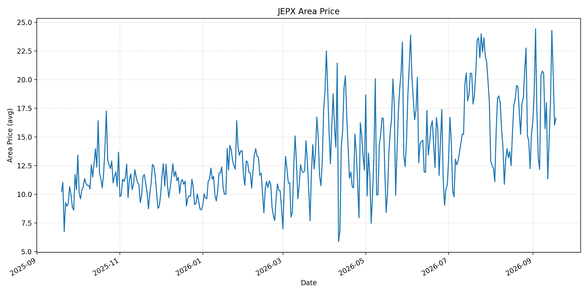
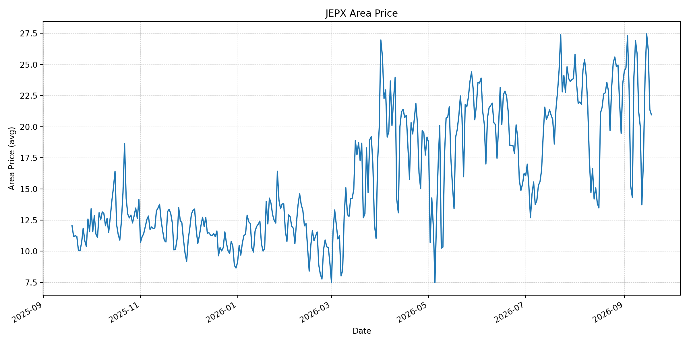
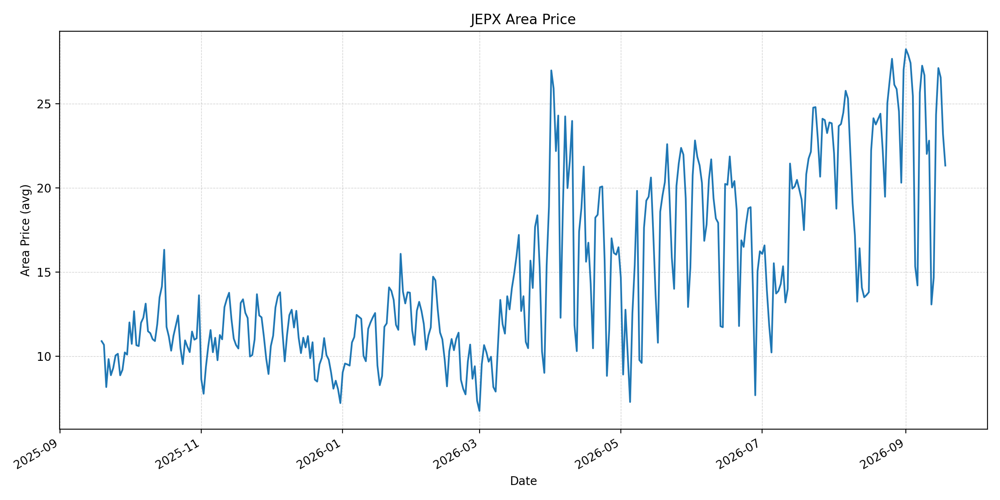
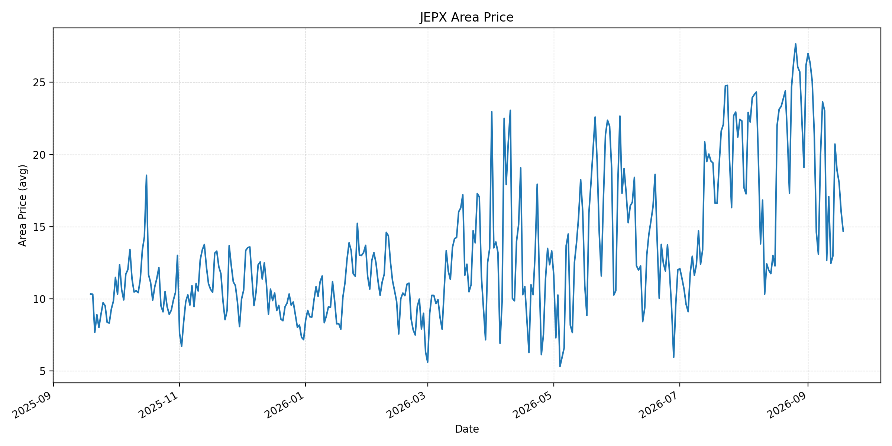
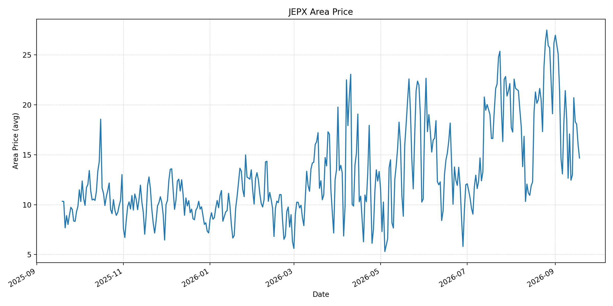
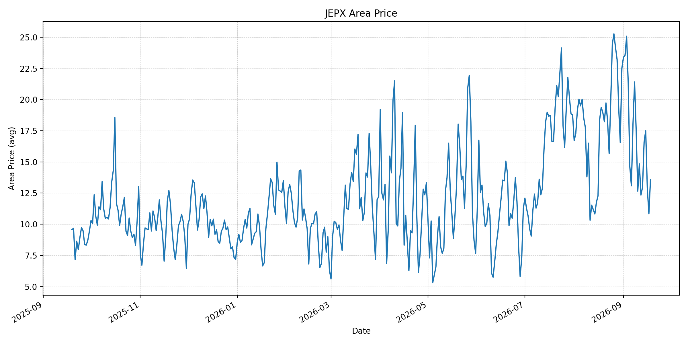
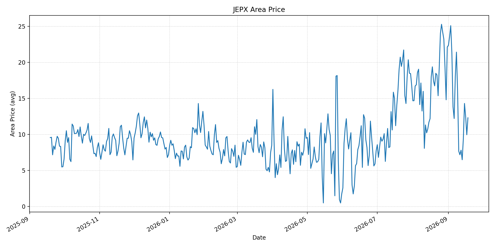
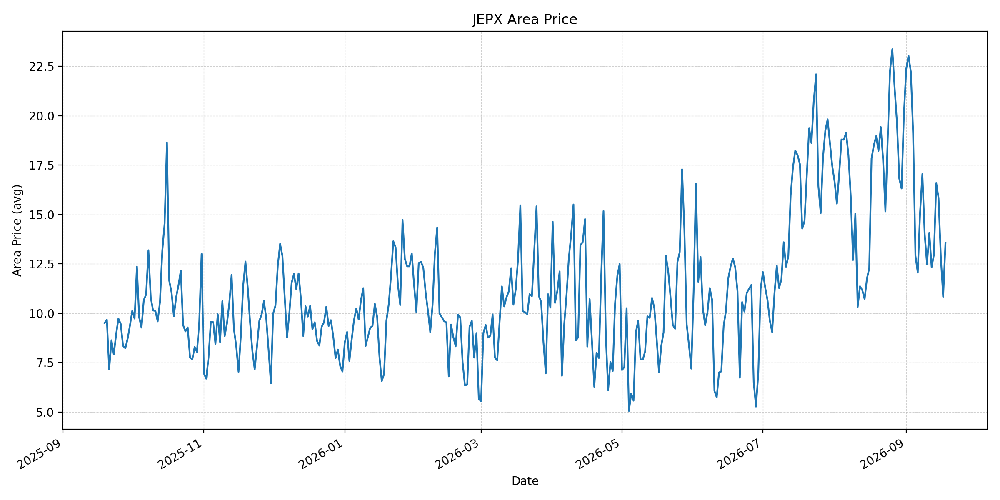
短期トレンド
JKMとJEPXシステムプライスの推移グラフ
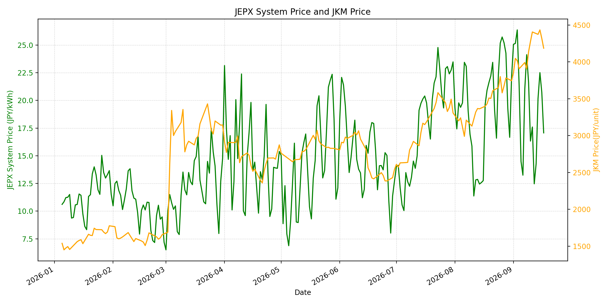
WTIの推移グラフ
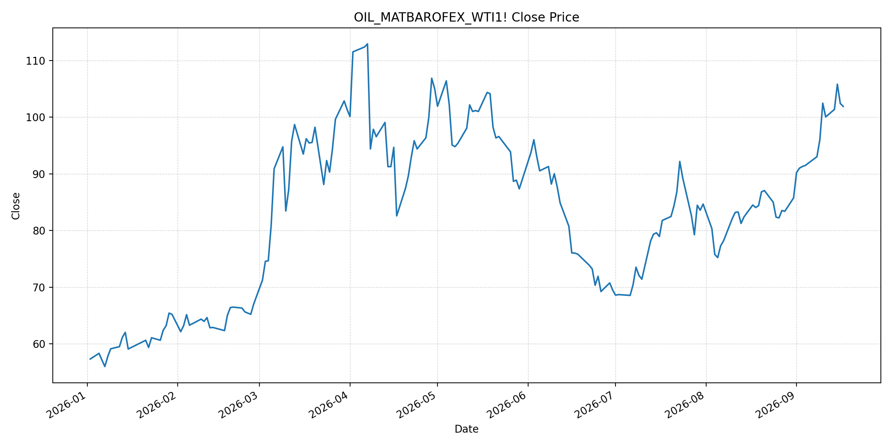
JEPXシステムプライス
最新値は 2026-09-18 分、先週終値は 2026-09-11、先月終値は 2026-08-31 時点の直近値です。
| エリア | 当日価格 | 前日価格 | 前日比（％） | 先週終値 | 先週比（％） | 先月終値 | 先月比（％） | 過去最高値 | 最高値比（％） |
|---|---|---|---|---|---|---|---|---|---|
| システム | 17.18 | 17.07 | 0.64 | 17.60 | -2.39 | 22.10 | -22.26 | 64.06 | -73.18 |
| 北海道 | 15.30 | 16.00 | -4.37 | 11.38 | 34.45 | 11.18 | 36.85 | 73.92 | -79.30 |
| 東北 | 16.64 | 16.04 | 3.74 | 17.99 | -7.50 | 15.25 | 9.11 | 84.92 | -80.40 |
| 東京 | 20.95 | 21.36 | -1.92 | 20.01 | 4.70 | 23.47 | -10.74 | 86.13 | -75.68 |
| 中部 | 21.32 | 23.18 | -8.02 | 22.80 | -6.49 | 27.01 | -21.07 | 52.06 | -59.05 |
| 北陸 | 14.67 | 16.03 | -8.48 | 17.08 | -14.11 | 26.18 | -43.96 | 46.48 | -68.44 |
| 関西 | 14.67 | 16.03 | -8.48 | 17.08 | -14.11 | 26.17 | -43.94 | 46.48 | -68.44 |
| 中国 | 13.57 | 10.84 | 25.18 | 14.84 | -8.56 | 22.51 | -39.72 | 46.48 | -70.81 |
| 四国 | 12.30 | 9.95 | 23.62 | 7.17 | 71.55 | 22.12 | -44.39 | 46.48 | -73.54 |
| 九州 | 13.57 | 10.84 | 25.18 | 14.08 | -3.62 | 20.06 | -32.35 | 40.54 | -66.53 |
LNG先物価格
最新値は 2026-09-17 の LNG(close) です。先週終値は 2026-09-10、先月終値は 2026-08-31 時点の直近値です。
| 当日価格 | 前日価格 | 前日比（％） | 先週終値 | 先週比（％） | 先月終値 | 先月比（％） | 過去最高値 | 最高値比（％） |
|---|---|---|---|---|---|---|---|---|
| 4185.00 | 4317.00 | -3.06 | 4276.00 | -2.13 | 3744.00 | 11.78 | 10319.00 | -59.44 |
石油先物価格
最新値は 2026-09-17 の OIL(close) です。先週終値は 2026-09-10、先月終値は 2026-08-31 時点の直近値です。
| 当日価格 | 前日価格 | 前日比（％） | 先週終値 | 先週比（％） | 先月終値 | 先月比（％） | 過去最高値 | 最高値比（％） |
|---|---|---|---|---|---|---|---|---|
| 101.91 | 102.43 | -0.51 | 102.48 | -0.56 | 85.76 | 18.83 | 123.70 | -17.62 |
ニュース
イラン情勢に関するニュース
- 米国はイラン首脳の国連ハイレベル会合出席のためのビザを承認しました。外交接触の余地は残るものの、戦闘の停止を示す合意は報じられていません。参照: AP, 2026-09-17
- サウジアラビアとフーシ派は国境を越える新たな攻撃を応酬し、紛争の地域化が進んでいます。参照: Reuters, 2026-09-17
ホルムズ海峡経由の石油・LNGに関するニュース
- タンカー攻撃後のホルムズ海峡の通航減速が続き、戦前の1日130隻超の水準を大きく下回っています。参照: Reuters, 2026-09-17
- 過去24時間で、ホルムズ海峡経由のLNG出荷を平常化する主要な新規合意は確認できませんでした。
ホルムズ海峡経由でない石油・LNGに関するニュース
- フーシ派の紅海沿岸・島しょへの進出は、湾岸原油の主な代替輸送路を脅かしています。参照: Reuters, 2026-09-17
- フーシ派による紅海の要衝掌握から1週間が経過し、サウジの石油輸出と世界市場の不安定化が続いています。参照: AP, 2026-09-17
日本国内のイラン戦争に関係するニュース
- 過去24時間で、イラン戦争を理由にJEPXの制度または国内の電力需給運用を直接変更する主要な新規公表は確認できませんでした。
- 日本の電力市場では、燃料輸入の不確実性が高まる一方、当日スポット価格は気象・再エネ出力・需給にも左右されます。
インサイト
ニュース事項による日本の電力市場への影響（短期：数日〜1週間）
- JEPXシステムは 17.18 円/kWhで前日比 0.64% です。中部 21.32 円/kWh、東京 20.95 円/kWhに対し、四国は 12.30 円/kWhとエリア差が残ります。
- LNGは 4185.00 で前日比 -3.06%、WTIは 101.91 ドルで -0.51% ですが、先月比はそれぞれ 11.78%、18.83% 上昇です。ホルムズと紅海双方のリスクは調達上振れ要因です。
- 短期では、実通航数、船舶攻撃、紅海航路の安全、スポットLNG船腹を日次で確認します。
ニュース事項による日本の電力市場への影響（長期：1ヶ月〜半年）
- システム価格は先月比 -22.26% ですが、燃料高と輸送制約が続けば火力の限界費用と小売調達コストへ波及する可能性があります。
- 北海道は先月比 36.85%、四国は -44.39% です。燃料相場とエリア別の需給・連系線制約を分けて評価します。
- ホルムズ海峡とバブ・エル・マンデブ海峡の双方の不確実性を踏まえ、調達先分散、LNG在庫、長期契約の柔軟性、代替輸送の実効性を継続評価します。